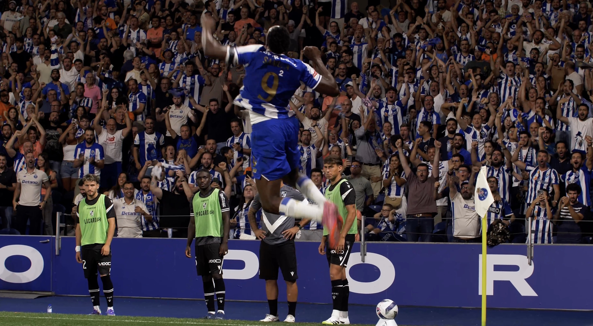

Trabalhos como Videógrafo
ADEPTOS FC PORTO VS VITÓRIA

COMPILAÇÃO DE CLIPES

KOTARO NAGATA

HIGHLIGHTS DE JOGO DO PORTO

RENOVAÇÃO RODRIGO MORA

Projetos Pessoais (Realizador)
JOVENS ADULTOS

BRUNO NUNO

WHY STOP NOW?

FUMAR MATA

VIVER EM PART-TIME

PINGUINS

SAMOT21

Trabalhos como Editor
CLIPES ADEPTOS FUTEBOL CLUBE

CLIP CONTRATAÇÃO JOGADORA

VIVER PART-TIME (TIKTOK)
FUMAR MATA (TIKTOK)

CLIP EDIT “SUCCESSION”